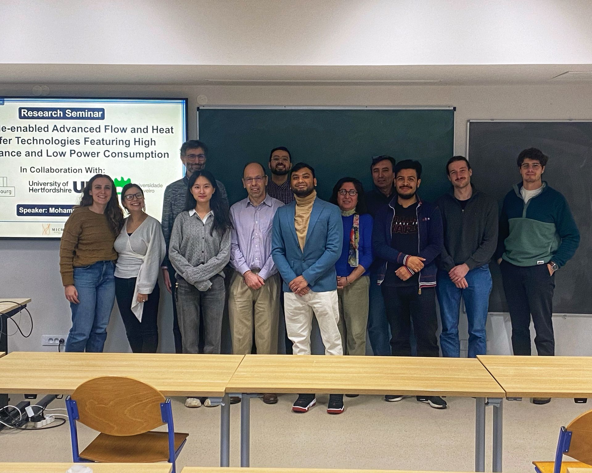
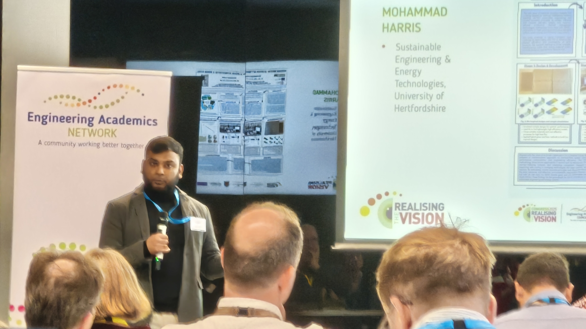
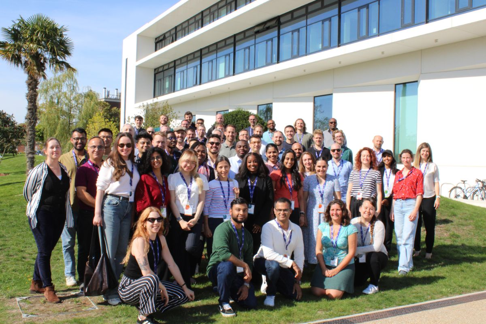
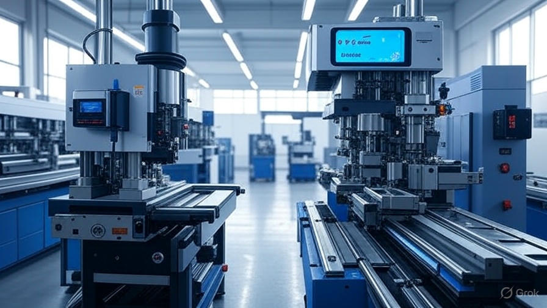

About Me
I'm a UK-based climate and clean technology founder working at the intersection of AI-enabled manufacturing, sustainable engineering, and circular systems. My work focuses on building applied, data-driven tools for sustainable manufacturing that help SME manufacturers improve resource efficiency, reduce waste, and operate within real-world technical and commercial constraints.
I'm currently the Managing Director of Inshira Technologies, where I develop AI-enabled manufacturing and circular economy products — from customer discovery and MVP development to early pilot deployments with UK and European manufacturers. The emphasis is on translating complex industrial sustainability challenges into practical digital systems with measurable energy, material, and cost impact.
I'm PhD-qualified in sustainable engineering and have secured and overseen more than £1m in competitive research funding. My work spans academia, industry, and startups, with a consistent focus on industrial decarbonisation and turning research into deployable, industry-facing solutions.
Languages & Global Reach
Fluent in English and Bangla | Proficient in Hindi and Urdu (B2) | Basic French and Spanish (A2) | German and Arabic (Learning)
Current Work
Managing Director & Founder
Inshira Technologies Limited | London, UK | Nov 2025 – Present
Key Achievements:
- Leading Inshira's strategic vision and overall growth in the climate and clean tech sector.
- Overseeing the development and implementation of Circular Economy AI & Smart Factory, focusing on innovative manufacturing solutions.
- Building strategic partnerships to foster innovation, sustainability, and industry collaboration.
- Securing funding and investment opportunities to support Inshira's growth and impactful projects.
- Championing ethical business practices and contributing to a diverse and inclusive workplace culture.
Core Competencies
Project Management & Leadership
Project Methodologies (Agile, Waterfall, Lean Six Sigma)
PM Tools (Jira, MS Project, Asana)
Stakeholder Engagement & Team Leadership
Budget & Risk Management
Sustainability & Innovation
Circular Economy Implementation
Life Cycle Assessment (LCA)
Funding & Grant Management
Product Commercialisation
AI & Data Science
Machine Learning (Python, TensorFlow)
Data Analytics (Pandas, NumPy, SQL)
Neural Networks & Deep Learning
MATLAB Programming
Engineering Design & Simulation
CAD/CAE (SolidWorks, ANSYS)
CFD & Thermal Simulation
Featured Projects

Micro-FloTec: Advanced Heat Transfer Technologies
Horizon Europe (Marie Skłodowska-Curie Actions) | Project Research Manager | 2022–2025
Pioneer compact heat transfer and thermal management systems for EVs, aerospace, and renewable energy storage. Coordinated 17+ international partners with €800,000+ budget.
Impact: Delivered IP and proof-of-concept ahead of schedule with multiple publications in top-tier journals.

Enhancing Thermal Management through Machine Learning Algorithms
PhD Research — University of Hertfordshire | Principal Investigator | 2021–2025
Developed novel framework combining machine learning, bio-inspired design, and Lean manufacturing for advanced thermal management.
Results: 30–70% heat transfer improvement, 60–70% computational reduction, 43% cost reduction, 29% energy savings, 19% lower emissions.

Carbon13 Venture Builder (Cambridge, Cohort 9)
Carbon13 | Climate Tech Entrepreneur | 2025
Selected as one of 80 innovators from hundreds of applicants for Cambridge's leading climate tech venture builder focused on decarbonisation solutions.
Impact: Presenting innovative concepts to stakeholders and investors in the climate tech ecosystem. Building strategic partnerships with University of Cambridge, Barclays, Eagle Labs, ARM, and NatWest.
Carbon-Based Photothermal Membranes
Royal Society | Researcher | 2022–2024
Contributed to next-generation solar energy storage materials using advanced carbon-based photothermal membranes.
AI-driven Turbine Manufacturing Optimisation (Rolls-Royce)
Alan Turing Institute | Researcher | 2022
Devised database and algorithms assisting root-cause analysis and identification of turbine production failures for Rolls-Royce.

Production Optimization (Hitachi Astemo)
NCME Bursary | Project Engineer | 2019
Applied Lean Six Sigma and machine learning to optimize production. Reduced reject rates by 3%, improved OEE to 85%.
Recognition & Impact
Professional Recognition
- RAEng Global Talent — Royal Academy of Engineering
- Fellow of Higher Education (FHEA)
- Member of IET (MIET)
- Chartered Engineer (CEng — interview pending)
- PMP Certification (exam pending)
Awards & Honours
- EPC Hammerman Award Finalist (2025)
- "Learning Machine" Award — Alan Turing Institute (2022)
- NCME Bursary Award — £16K (2019)
Community Leadership
- STEM Ambassador — UK
- F1 in Schools Judge
- Guest Editor — Sage and MDPI
- Peer Reviewer — All major publishers
Academic Excellence
- PhD Sustainable Engineering (2024)
- MRes Engineering Management — Distinction (2020)
- BEng (Hons) Automotive Engineering — First Class (2018)
- PGCert Learning and Teaching
Impact Metrics
0
Research Funding
0
International Partners
0
Publications
Selected Publications
-
Journal of Cleaner Production, Elsevier — Harris & Wu, 2025
-
Assessing Thermohydraulic Performance in Novel Micro Pin-Fin Heat Sinks
International Journal of Heat and Mass Transfer, Elsevier — Harris, Babar & Wu, 2024
-
Heat Transfer Optimisation Using Novel Biomorphic Pin-Fin Heat Sinks
Thermal Science and Engineering Progress, Elsevier — Harris, Wu et al., 2024
-
Flow Boiling Pattern Recognition using CNN-Clustering Algorithms
14th IEEE ICPRS'24
-
Engine Mass Airflow Sensor Production via TQM, TPM, and Six Sigma
Operations Research Forum, Springer — Harris, 2021
Hobbies & Interests
Frequently Asked Questions
Common questions about my background, expertise, and the kind of work I do.
My expertise sits at the intersection of sustainable engineering, AI, and industrial systems. I'm PhD-qualified in sustainable engineering from the University of Hertfordshire, with a research background spanning machine learning for industrial processes, thermal management, circular economy implementation, and manufacturing optimisation. My work has been funded by UKRI, Horizon Europe, the Royal Society, and the Alan Turing Institute, and published in journals including Elsevier and Springer. I'm particularly focused on translating advanced engineering research into practical, commercially viable tools for industrial decarbonisation.
Manufacturing processes generate large amounts of operational data — cycle times, reject rates, energy readings, material flows — that most businesses collect but rarely analyse at a granular level. Machine learning can identify patterns across that data to pinpoint exactly where energy is being wasted, where material is being lost, and which production stages are causing downstream inefficiency. My peer-reviewed research has demonstrated outcomes of 29% energy savings, 43% cost reductions, and 19% lower emissions by applying this approach — without large capital investment in new equipment or sensors.
Yes. I'm open to consulting engagements, advisory board roles, and research collaborations in industrial decarbonisation, sustainable manufacturing, AI in industry, and climate technology. I'm also available for speaking at events and panels on these topics. The best way to get in touch is via harris@inshira.co.uk or through the contact form on this page.
Let's Connect
Open to collaboration opportunities in climate technology, sustainable innovation, and AI-driven solutions. Available for consulting, partnerships, and advisory roles in decarbonisation ventures.
Collaboration Interests
- Climate and clean tech venture partnerships
- AI-driven decarbonisation solutions
- Project management & engineering consulting
- Research collaborations
- Advisory and mentorship roles